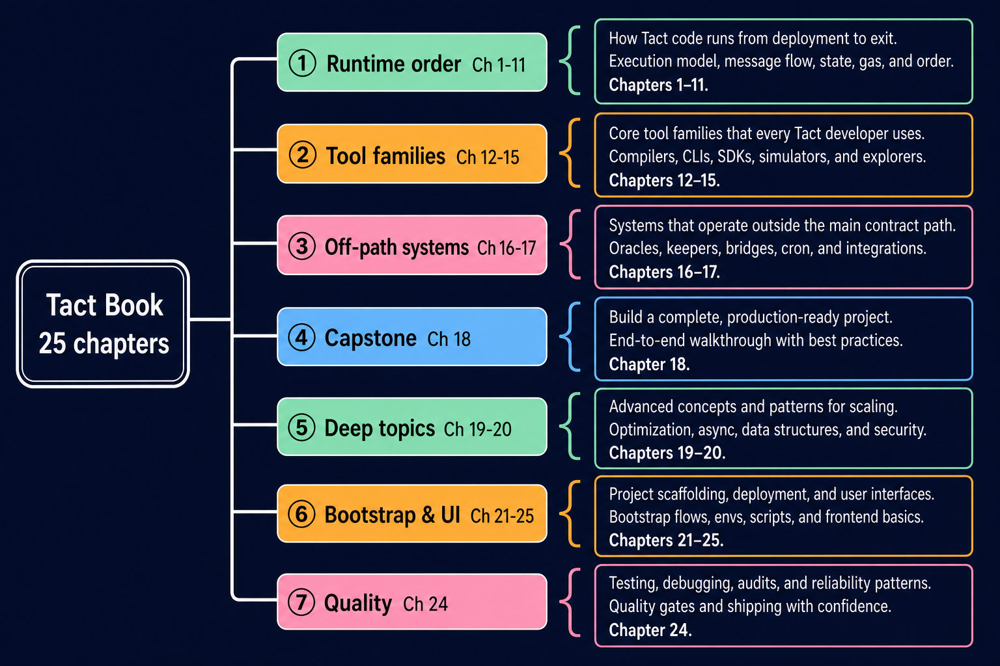

Right-hand tree layout (root on the left → topic column → descriptions on the right). Works better than a radial mind map for all 26 chapters.
Open mindmap.html in a browser — also embedded in index.md. Dark theme, color-coded topics, chapter links on the right.

| Layout | File | Notes |
|---|---|---|
| Right-hand tree | mindmap.html / mindmap.png |
Root → topics → details (default) |
| Reading paths | Mermaid below | Three common entry paths |
| Runtime pipeline | Mermaid below | Single chain 01→18 |
Mermaid cannot draw { braces; this
flowchart LR approximates the same structure:
flowchart LR
ROOT["Tact Book<br/>26 chapters"]
ROOT --> B1 & B2 & B3 & B4 & B5 & B6 & B7 & B8
B1["① Runtime order<br/>Ch 1–11"] --> D1["Store → Skill → Memory → Prompt<br/>→ Compact → Recovery → Tool<br/>→ MCP → Hook → Permission → Scheduling"]
B2["② Tool families<br/>Ch 12–15"] --> D2["Subagents · Background · Team · Worktree"]
B3["③ Off-path<br/>Ch 17"] --> D3["Notify"]
B4["④ Capstone<br/>Ch 18"] --> D4["agent_loop · streaming · TaskComplete"]
B5["⑤ Deep topics<br/>Ch 19–20"] --> D5["Persistent Tasks · Hallucination"]
B6["⑥ Bootstrap & UI<br/>Ch 21–25"] --> D6["Config → LLM → TUI → Protocol"]
B7["⑦ Quality<br/>Ch 24"] --> D7["Mock LLM · driver tests · TestBackend"]
B8["⑧ Issue log<br/>Ch 26"] --> D8["Shipped optimizations · bug fixes"]flowchart LR
subgraph A["Path A · New provider"]
A21["21 Config"] --> A22["22 LLM"] --> A23["23 TUI"] --> A25["25 Protocol"]
end
subgraph B["Path B · Understand loop"]
B01["01–06"] --> B07["07–11"] --> B18["18 Loop"]
end
subgraph C["Path C · Testing"]
C18["18 Loop"] --> C24["24 Testing"]
end| Path | Chapters | When to use |
|---|---|---|
| A | 21 → 22 → 23 → 25 | New provider or binary |
| B | 1 → 11 → 18 | One full agent_loop turn |
| C | 18 → 24 | Integration tests |
| # | Chapters | Group |
|---|---|---|
| 1–11 | Store … Scheduling | ① Runtime order |
| 12–15 | Subagent … Worktree | ② Tool families |
| 17 | Notify | ③ Off-path |
| 18 | Agent Loop | ④ Capstone |
| 19–20 | Tasks · Hallucination | ⑤ Deep topics |
| 21–23, 25 | Config … Protocol | ⑥ Bootstrap & UI |
| 24 | Testing | ⑦ Quality |
| 26 | Issue Log | ⑧ Engineering changelog |